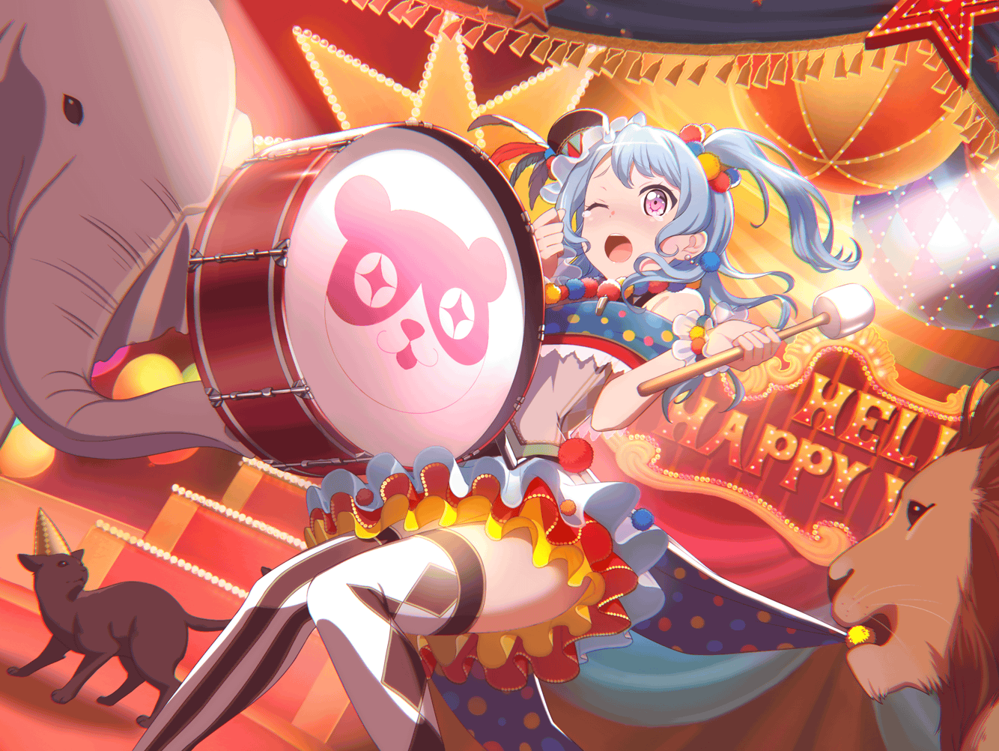

花音
……あ、こんにちは
花音
偶然ですね、こんなところで会うなんて。
お仕事の休憩ですか？
花音
私は友達とちょっと待ち合わせで、
通りかかっただけなんです
花音
一緒にこの先のカフェで、
お茶しようって約束してて……えへへ
花音
あのカフェのこと、{{userName}}さんも知ってますか？
私、あのお店が好きなんです。
なんでだろう……雰囲気かな？
花音
もちろん、メニューも好きなんですけどね
花音
この前も、友達と来て……って、
私、このカフェに来てばっかりですねっ
花音
ええと……白鷺千聖ちゃんってわかりますか？
花音
あ、やっぱりご存知だったんですね！
千聖ちゃんと一緒に来たんですよ
花音
千聖ちゃんは、中学の時のクラスメートで……
あ、今も同じクラスですけど
花音
千聖ちゃん、いつも忙しいから、
今日は、久しぶりに一緒の時間を過ごせるんです！
花音
でも、この前みたくならないように気をつけなくちゃっ
花音
……何があったの、ですか？
花音
ええと……この前も久しぶりに会えて、
せっかくゆっくりふたりで話せる機会だったんですけど、
私、自分のことばっかり話しちゃったんです
花音
ハロハピのこと、
まだ千聖ちゃんに、ちゃんと話せてなかったから……
花音
ついついしゃべりすぎちゃったんです
花音
でも、千聖ちゃん、
嬉しそうに私の話を聞いてくれてました
花音
私、あんまり自分のことを話すのが、
得意じゃなくて……
花音
だから、いつもは大体聞き役なんです
花音
そんな私がいっぱい話したから、
千聖ちゃん驚いたみたいだけど、
嬉しいって言ってくれたんですよ
花音
その日の別れ際に、
バンドの掛け声を千聖ちゃんに向かって言ったりもしたなぁ……
花音
千聖ちゃん、それも驚いてました、
花音
一緒に掛け声を誘ったんですけど、
遠慮されちゃいました
花音
ふふ……いつか一緒に言ってくれたらいいのになぁ
花音
私の大好きなバンドの掛け声だから、
大切なお友達の千聖ちゃんにも……
花音
たぶん、私がこんな風におしゃべりできるようになったのって、
バンドを始めたからだと思うんです
花音
こころちゃんや薫さん、
はぐみちゃんに美咲ちゃん……
花音
みんながいてくれたから、
今の私になれたんだと思います
花音
そういえば、千聖ちゃんに少し変わったとも言われたんです
花音
私自身は少しおしゃべりになったことぐらいしか、
わかりませんけど……
千聖ちゃんが言うんです、きっと変われたんでしょうね
花音
……あ、す、すみませんっ。
さっきから、私ばっかりしゃべっちゃってて……
花音
ふふ……さっき自分で気をつけようって言ったばかりなのに、
これじゃあ先が思いやられますね
花音
でも、悪い方に変わったわけじゃないから、
喜ぶことにします！
花音
ハロハピに入らなかったら、
昔のままの私だったと思いますし……
花音
きっと、ドラムもやめて……
ずっと誰かの聞き役のままで、
自分の意見すら言えない私だったと思います
花音
正直、初めてこころちゃんに声をかけられたときは、
驚いたし戸惑いましたけど……
花音
でも、バンドに誘ってもらったことに、
今では感謝してるんです！
花音
……あのとき、
こころちゃんに声をかけてもらわなかったら
もうドラムに触ることもなかったですし
花音
そうそう、千聖ちゃん驚いてました。
私がドラムを続けてることに
花音
そう考えると、
こころちゃんに声をかけてもらわなければ、
今の私は、本当にいないんですよね……
花音
改めて、こころちゃんに、
きちんと感謝の気持ちを伝えないと！
花音
バンド活動は
楽なことばっかりじゃないですけど……
花音
それでも、感謝の気持ちの方が
はるかに大きいんですから！
花音
あの、これからもハロハピをよろしくお願いします！
私の大好きで大切なバンドだから……
花音
これからもずっとずっと、
今のメンバーと一緒にバンドをやっていきたいんです！
花音
そのためにも、ライブハウスは大切な場所で、
ずっとお世話になると思うし……
花音
それに、私達以外の誰かが、
私達を見守ってくれてたら嬉しいなって……
花音
……って、いきなりこんなこと言ってすみませんっ。
勢いあまって変なお願いしちゃいましたね
花音
貴重な休憩時間に、
お話を聞いてくれてありがとうございました！
花音
やっぱり、誰かの話を聞くのも楽しいですけど、
自分の話を誰かに聞いてもらえるのもいいものですね
花音
あの、今度お時間があったら{{userName}}さんの、
お話を聞かせてください！
花音
今日、たくさん聞いてもらったお礼に、
いっぱい聞きたいです！
花音
それじゃあ、これから千聖ちゃんと会うので、
私は失礼します
花音
……って、大変！
もうこんな時間！？
花音
走らなきゃ遅刻しちゃう～！！
花音
千聖ちゃん待ってて～！！